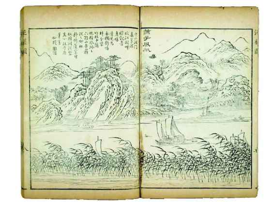
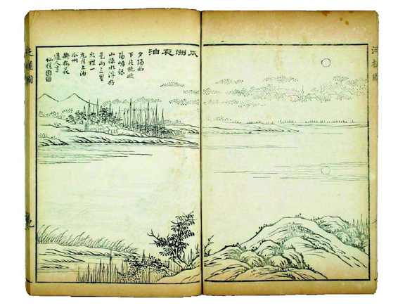
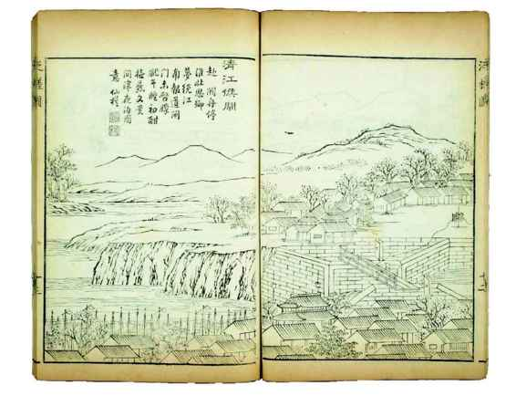
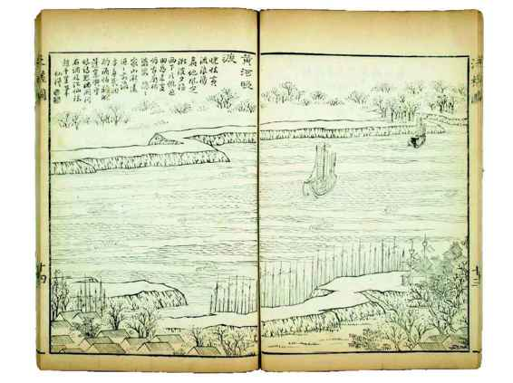
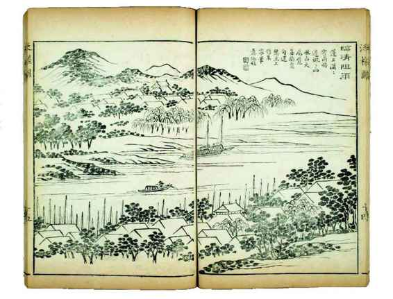
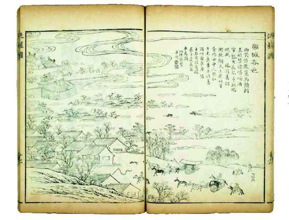
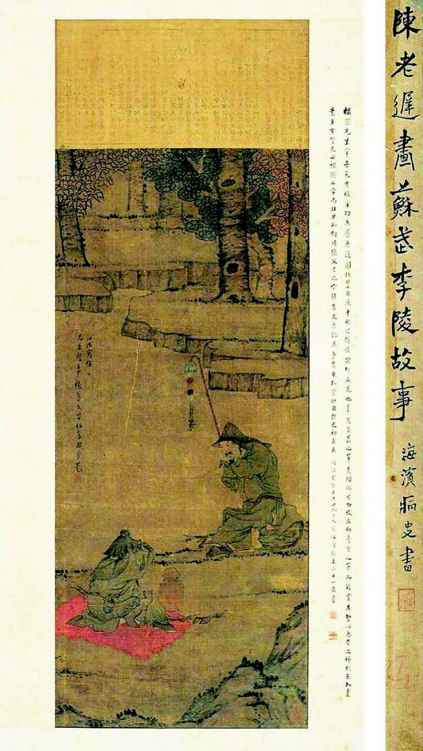

冥冥之中，历史总有些精巧的安排。出使北京，是正式而重大的行动，正使之选当然最好是有丰富外交经验的专家，左懋第显然不是这样的人。他的为宦生涯，从知县做起，崇祯十二年提拔为户科给事中，崇祯十六年迁刑科左给事中，弘光后任兵科都给事中，旋擢右佥都御史兼应、徽巡抚。从这履历看，可算一位财政专家，也擅长监察工作，但对外交事务确实并无阅历。然而阅读他的资料，我极为惊讶地发现，其平生最浓墨重彩的这一页，其实早有伏笔。

《泛槎图》•燕子风帆
张宝是清代乾嘉间的南京人氏，他有两个爱好，“喜作画”、“癖山水”，《泛槎图》便是二者的结晶。头几幅所绘，恰好与弘光使团北京之行路线贴合，可为我们做一形象展示。“燕子风帆”描绘启程之初，即从南京北上，于燕子矶码头涉水过江。

《泛槎图》•瓜洲夜泊
如果早间自燕子矶起帆，约日落时才行到对岸，故曰“夕阳西下片帆收”。当晚在此暂歇，“一丸月上泊瓜州”，来日再行。

《泛槎图》•清江候闸
行程下一要地淮安。所候之闸，便是有名的清江大闸，至今仍存。候闸的原因，一来船只众多、河道繁忙，需要排队；二是闸上闸下水位有落差，每过一船，由闸工用两边岸上所备“绞关”牵引，颇为费时。这两点本图均有表现，下方是林立之樯影，右侧对岸上转盘形装置即“绞关”。从陈洪范叙述知，弘光使团在清江浦有逗留，或与候闸有关。

《泛槎图》•黄河晚渡
出了清江浦，便是改道期的黄河。“晓怯黄流浪涌”，似乎黄河早间风大浪急，至晚方减，故通常选择“晚渡”。

《泛槎图》•临清阻雨
山东临清为北运河上一大商埠。对弘光使团来说，临清的意义是，在这里他们与满清方面有了初次接触：“（九月）十五日晚，临清有旧锦衣卫骆养性，（夷）用为天津督抚，遣兵来迎。”

《泛槎图》•帝城春色
北京在望，张宝诗曰：“酒帘飘出长安市， 桃坞烘成凤阙春。”左懋第眼中的北京断然不同。他上次离开，北京还是明帝国之都和自己白发萱堂所在的地方，重新看见它时，这两者都已失去。

陈洪绶《苏武李陵图》
苏武出使匈奴，被羁十九年，“始以强壮出，及还，须发尽白”。左懋第在北京宁死不屈，被目为“当世苏武”。
李清后来为左懋第整理编辑的《萝石山房文钞》，卷三收有《新汉典属国苏子卿墓垣记》一文。文末写道：“丁丑春，余记之。”[14]这个丁丑年，应为1637年，即崇祯十年。当时，他在陕西韩城当知县。那么，“苏子卿”是谁？不是别人，恰是汉武帝时出使匈奴被扣、寒荒牧羊十九载而不屈的苏武。子卿是他的字。《汉书》说他“始以强壮出，及还，须发尽白”。[15]备历艰辛，不辱使命，始元六年（前81）春，终得还国。这时武帝已经故去，昭帝特地安排苏武带着祭品去武帝的陵庙告慰、复命，然后任命他做“典属国”，全面负责与“属国”有关的事务，实际也即汉朝的外交部长（虽然古人无“外交”的概念）。
说到苏武墓，如今大家知道在武功县，且列为陕西省重点文物保护单位。其实，直到明代还有两处苏武墓，武功之外，另一处在韩城，孰真孰伪当时尚无定论，左懋第便说：“或曰武功亦有墓，韩人常与之争”[16]，韩城墓据说有汉代碑石为证。这笔官司，我们可不理会。关键是，韩城作为苏武可能的葬地与左懋第其人之间，完全应了“无巧不成书”那句话。韩城，是左懋第仕途的起点；而他一生的终点，便是出使北京、不屈而死，以“当世苏武”垂世。这看上去仅为巧合，实则不然，读《新汉典属国苏子卿墓垣记》，我们敢于断言，韩城五年，左懋第从其该地最重要历史遗产苏武墓那里，受到了深刻影响，埋下了日后执节不屈的思想种子。他这样描绘氤氲于韩城、浓得化不开的“苏武氛围”：
子卿墓在韩城西北五里姚庄村梁山之麓，因有墓，名“苏山”焉，邑有常祀。余为令，具羊豖拜其墓。麓多柏枝，咸南向。[17]
他深受感染，对韩城人坚持与武功人“争”苏武葬地，很以为然，说：“噫！君子之忠，草木□格，争为之微，而谓人心能弃之欤？”[18]当韩城士民提出，墓地旁苏祠垣颓宜修，左懋第即表支持，认为是极有意义的事，“一土一石，而皆有以触人心之忠”[19]。一年后修葺完毕，特地写下此文。文中，盛赞武帝时代有很多“光华奇锐瑰异”的人物，文如司马相如，武如卫青、霍去病，但是，他们若跟苏武相比，都“不能与并论”[20]——评价奇高，我们从一般角度看，简直有些过誉；不过，把这作为个人抱负看就另当别论，事实上，我正是读了这篇文章，方觉着觅到了左懋第使北一切表现的精神根源。